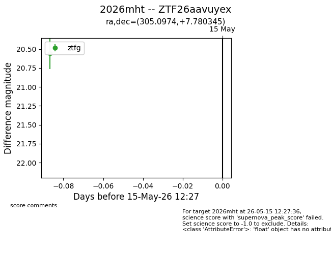
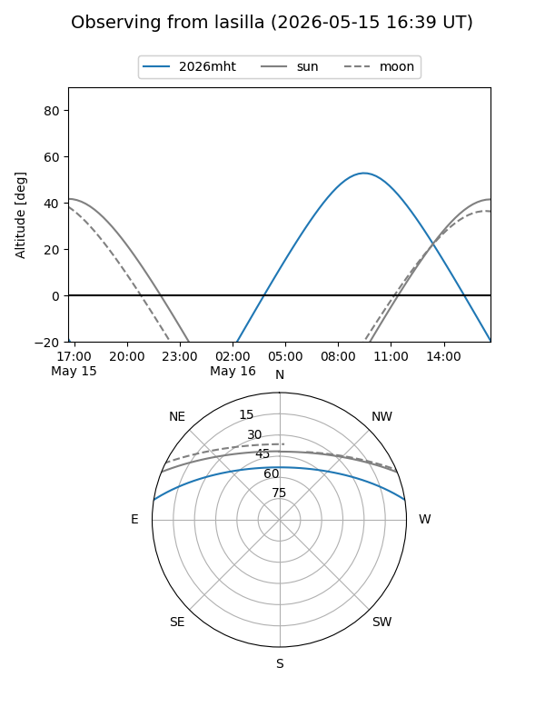
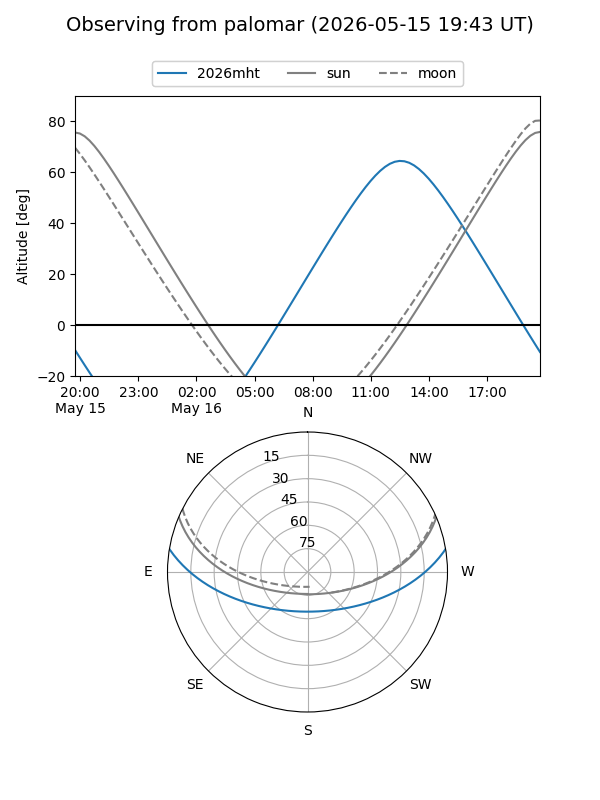

2026mht
Target 2026mht at 2026-05-15 12:28
Aliases and brokers:
FINK: link
Lasair: link
ALeRCE: link
TNS: link
YSE: link
alt names
ZTF26aavuyex (ztf,fink_ztf)
2026mht (tns,yse)
Coordinates:
equatorial (ra, dec) = 305.0974,+7.78035
equatorial (HMS+DMS) = 20:20:23.38,+07:46:49.24
galactic (l, b) = (50.5627,-15.78268)
Flags:
Photometry:
last ztfg=20.56
1 ztfg detections
Lightcurve

Visibility


Additional plots